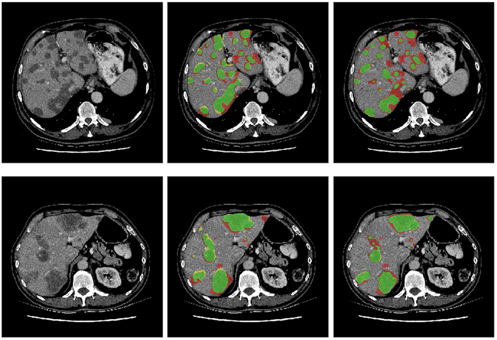

Download
Abstract
This study proposes a novel deep learning framework for simultaneous biomarker regression and localization from medical imaging data, trained solely with biomarker value annotations and without requiring segmentation masks. The method integrates a candidate region generation step, based on simple intensity heuristics, with an encoder-decoder convolutional network that produces a high-resolution localization map. The biomarker value is computed by aggregating the localization output within the candidate regions, and the network is optimized by minimizing the difference between the predicted and ground truth biomarker values. The proposed approach was comprehensively evaluated across multiple clinical tasks, including estimation of pectoralis muscle area (PMA) and subcutaneous fat area (SFA) from 2D chest CT slices, coronary artery calcium (CAC) scoring using the Agatston method from 3D non-contrast thoracic CT volumes, and liver tumor area quantification from abdominal CT images. Experimental results demonstrate that the method consistently outperforms traditional direct regression networks in terms of biomarker estimation accuracy, risk group classification, and localization quality, while maintaining architectural simplicity and eliminating the need for post hoc attention mechanisms or structural modifications. Moreover, the framework exhibits strong generalizability across different network backbones and imaging domains. By enabling biomarker extraction without segmentation masks, this approach addresses a critical bottleneck in medical imaging studies and offers a scalable, interpretable solution for biomarker discovery from weakly labeled clinical datasets.
Figure 12: Liver tumor localization

Citation
C. Cano-Espinosa, G. González, G. R. Washko, M. Cazorla and R. S. J. Estépar, “Biomarker Localization From Deep Learning Regression Networks,” in IEEE Transactions on Medical Imaging, vol. 39, no. 6, pp. 2121-2132, June 2020, doi: 10.1109/TMI.2020.2965486.
@ARTICLE{8954767,
author={Cano-Espinosa, Carlos and González, Germán and Washko, George R. and Cazorla, Miguel and Estépar, Raúl San José},
journal={IEEE Transactions on Medical Imaging},
title={Biomarker Localization From Deep Learning Regression Networks},
year={2020},
volume={39},
number={6},
pages={2121-2132},
keywords={Image segmentation;Computed tomography;Biomedical imaging;Tumors;Databases;Muscles;Fats;Biomarker direct regression;biomarker localization;coronary artery calcification;convolutional neural networks},
doi={10.1109/TMI.2020.2965486}}